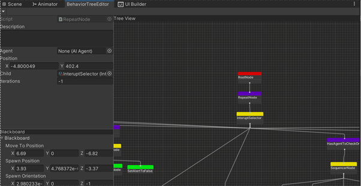

<link
  rel="stylesheet"
  href="https://use.fontawesome.com/releases/v5.8.2/css/all.css"
  integrity="sha384-oS3vJWv+0UjzBfQzYUhtDYW+Pj2yciDJxpsK1OYPAYjqT085Qq/1cq5FLXAZQ7Ay"
  crossorigin="anonymous"
/>

<link rel="preconnect" href="https://fonts.gstatic.com">
<link href="https://fonts.googleapis.com/css2?family=Roboto+Mono:wght@300&display=swap" rel="stylesheet">
<link href="https://fonts.googleapis.com/css2?family=Raleway:wght@600&display=swap" rel="stylesheet">
<link href="https://fonts.googleapis.com/css2?family=Roboto+Condensed:wght@300&display=swap" rel="stylesheet">
<link rel="stylesheet" href="info.css">

<head>
<meta name="viewport" content="width=device-width">
<title>Believable Enemy AI for Stealth Games</title>
</head>

<main>
  <nav id="navbar">
    <h2 id = "projectTitle">Believable Enemy AI Systems for Stealth Games</h2>
    <a href="index.html">Back</a>
  </nav>

<div id="seperator"></div>
<h2>The Project</h2>
<p>The majority of challenge and enjoyment for the player when playing a stealth game comes from the believability of the enemy AI systems; the way they react to the player, allies around them, and a changing game environment. The overall aim of this project is to create AI agents for stealth games that seem believable to the player this may sound like an AI agent should be smart however if an AI agent feels dumb the player will not get any satisfaction from beating them. However, not being dumb is not the same as being smart, the Ais actions must feel plausible to the player. This means that for the AI to be believable it also has to feel fair to the player. The stealth game genre was chosen for this report as it requires AI to not know about the player, instead they have to be aware of what is going on around them in order to be believable. The main reason this is an important area for research is that in games the majority of fun and enjoyment for the player comes from overcoming challenging situations. In stealth games these situations are primarily based around how the AI reacts to the player and the game environment.  </p>
<h2>Project Specifics</h2>
<p>Built in C# using Unity 2021</p>
<p>Built in 6 months. January 2022 - May 2022.</p>
  <button><a href="https://github.com/AdamHarris-GamesProgrammer/BelievableStealthAI" target="_blank">GitHub Repository</a></button>
  <div id = "body">
    <h2>Features</h2>
    <div id="seperator"></div>
      <div>
        <li>View cone model for sight that is similar to how human eyes work</li>
        <li>Different visual detection values based on the size of limbs on the player. E.g. the player's chest is more visible than the arm</li>
        <li>A optimised approach to the visual perception based on a maximum amount of raycasts that can occur per frame</li>
        <li>Auditory perception model based on a pathfind distance between sound origins and the perceiver. </li>
        <li>Environmental awareness systems that allowed the AI to respond to a changing game environment</li>
        <li>Social interactions between the AI where they search in groups and will notice if an AI goes missing from their group.</li>
        <li>Custom behaviour tree editor and system</li>
        <li>Systems for creating dialogue sets for AI to create unique AI each time (if given enough dialogue samples)</li>
        <div class="videoFrame-small"><p>A diagram of how auditory perception systems usually function</p></div>
        <div class="videoFrame-small"><p>A diagram of how the auditory perception system functions in this project</p></div>
        <div class="videoFrame-small"><p>The Completed Behaviour Tree for this Project</p></div>
        <div class="videoFrame-small"><p>The Behaviour Tree Editor created for this project</p></div>
        <div class="videoFrame-small"><p>The View Cone Model created for use in this project</p></div>
      </div>
    <div>
    </div>
    <div id = "seperator">
      <h2>What went well</h2>
      <div>
        <li>Implementation of the Visual and Auditory Perception Systems</li>
        <li>Environmental Awareness Systems</li>
        <li>AI making their intentions known to the player</li>
      </div>
      <h2>What didn't go well</h2>
      <div>
        <li>Social interactions could’ve been a lot smoother and more believable</li>
        <li>The initial adjustment to using behaviour trees took more thought than expected.</li>
      </div>
      <h2>What could be improved/added</h2>
      <div>
        <li>Different engine/framework</li>
        <li>More social interactions</li>
        <li>Personalities for each AI agent </li>
        <li>Senses affected by the game environment</li>
        <li>Use of a different framework/game engine. Unreal engine would’ve been a better choice for this project due to systems like behaviour trees already being in place.</li>
      </div>
      <h2>What I Learned</h2>
      <div>
        <li>How to correctly scope a project</li>
        <li>Creating advanced gameplay mechanics from thought, to design, to implementation</li>
        <li>How games create believable AI systems</li>
        <li>The importance of non-programmatic polish to make AI seem believable. </li>
        <li>Profiling and optimisation of computationally demanding mechanics/features</li>
      </div>
	  <h2>Gameplay Demo</h2>
	  <iframe width="560" height="315" src="https://www.youtube.com/embed/jiq2_hP53NE" title="YouTube video player" frameborder="0" allow="accelerometer; autoplay; clipboard-write; encrypted-media; gyroscope; picture-in-picture" allowfullscreen></iframe>
	  <h2>Technical Demo</h2>
	  <iframe width="560" height="315" src="https://www.youtube.com/embed/K_NlBLnvuTQ" title="YouTube video player" frameborder="0" allow="accelerometer; autoplay; clipboard-write; encrypted-media; gyroscope; picture-in-picture" allowfullscreen></iframe>
    </div>
  </div>

  <footer id="footer">
    <h3 id="footer-text">Adam Harris &copy;2022</h3>
  </footer>
</main>
